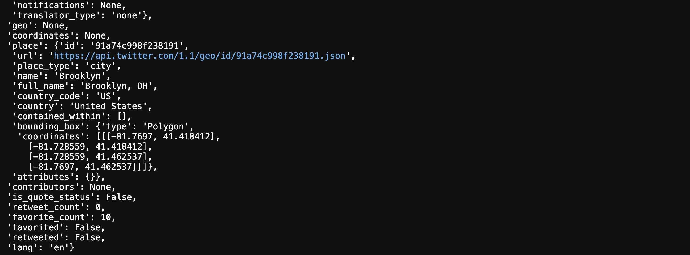

Twitter Sentiment for COVID-19
Presented by Zhiyuan "Jason" Zheng, PhD
American Cancer Society
Motivations
- COVID-19: disruptions in daily life and work
- Twitter: public social platform for opinions
- More than 60 million Twitter users in the United States
- Sentiment: people's attitude toward COVID-19
- Potential topics:
- Machine learning:
Health, safty, economics, social distancing, and school reopenings
Latent Dirichlet Allocation (LDA): unsupervised learning for clusterings/topics
Twitter Data
- Twitter API: 8 days of data (Aug 08 to Aug 15)
- Limited to 5000 tweets per day related to COVID-19: English, within United States
- Search key words:
- A total of 40K Tweets
corona, #corona, coronavirus, #coronavirus, covid, #covid, covid19, #covid-19, sarscov2, #sarscov2, sars cov2, sars cov 2, covid_19, #covid_19, #ncov, ncov, #ncov2019, ncov2019, 2019-ncov, #2019-ncov, pandemic, #pandemic, #2019ncov, 2019ncov
Full tweet text and geo information
A snapshot for a tweet
A snapshot for a tweet
A snapshot for a tweet
Sentiment analysis
Sentiment examples
Sentiment analysis
- Sentiment analysis:
- TextBlob
The process of ‘computationally’ determining whether a piece of writing is positive, negative or neutral. It’s also known as opinion mining.
A Python library for processing textual data, part of the natural language processing for part-of-speech tagging, noun phrase extraction, sentiment analysis, classification, translation, and more.
Natural Language Processing (NLP)
- NLP definition:
A subfield of linguistics, computer science, information engineering, and artificial intelligence concerned with the interactions between computers and human (natural) languages, in particular how to program computers to process and analyze large amounts of natural language data.
NLP Continued
- Splitted and stemmed (example):
Before: "As Columbia County suffers a #COVID19 spike due to golfing events. ... a political golf event in Easton with NO MASKS and NO SOCIAL DISTANCING. #NewYork #MaskUp https://t.co/zeOe511KdM"
After: "columbia counti suffer #covid19 spike due golf event ... polit golf event easton mask social distanc #newyork #maskup http co zeoe511kdm"
- Final words count: >70K (18k words showed up more than once)
Machine Learning
- Machine Learning
- Top 400 words were seleted and 140 words were mannually removed (e.g. he, did, go, yo, yeserday, etc). Final key words: 260
- Latent Dirichlet Allocation (LDA): Unsupervised learning for clusterings/topics
- Grid search: n = 2 clusterings
- From 2 up to 8 clusterings: human choice of 5 clusterings
Latent Dirichlet Allocation Model Explained
Latent Dirichlet Allocation Model Explained
Latent Dirichlet Allocation Model Explained
Machine Learning Continued
- Human Choice of 5 Clusterings:
1. School_reopening (n=8557): school play footbal back week season colleg kid player sport cancel fall team game health risk plan check children high concern big athlet year take wonder free open reopen confer
2. 2020_Election (n=7945): trump realdonaldtrump american vote respons peopl presid elect america kill countri mail help state million think unemploy relief world money economi order call democrat gop take biden lie fund hous
3. State_News_Economy (n=7184): test new time case death posit state thank today well number report job work amp result rate first back florida hospit quarantin neg
4. Policies_Mask_Safty (n=8650): amp like mask peopl wear feel social student commun work spread safe help real everyon post love distanc put great famili face
5. General_Critics (n=7664) die peopl month year vaccin fuck home live shit good take pleas sick work life mani busi flu last first right stop kid think patient care immun
Results
Future Directions
- COVID-19 and cancer patients
- Cancer and financial hardship
- Historical data
- Model improvements
- Looking for future updates? Click on: Twitter Sentiment
Help us fight cancer
If you find this analysis helpful, please click on our logo and and make a donation: